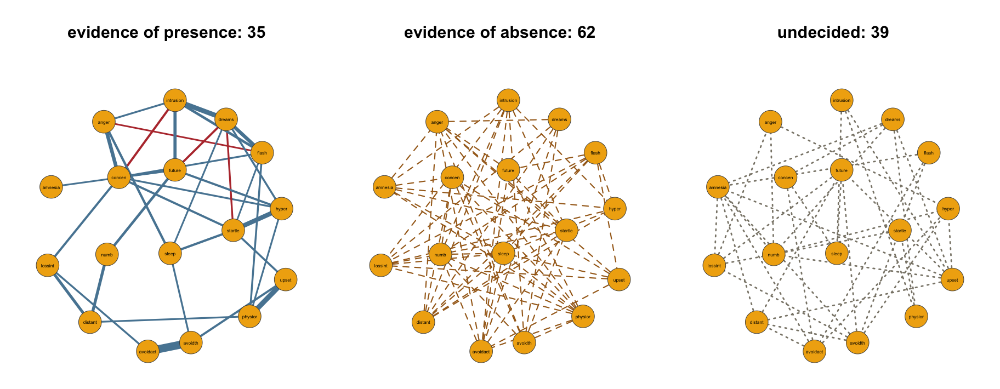

Warning: package 'qgraph' was built under R version 4.6.1From estimation to evidence

The 35 pairs in the presence panel are associations these data support, each drawn with its estimated weight. The 62 dashed pairs in the absence panel are positive findings too: the data support conditional independence for each of them. The 39 dotted pairs in the undecided panel are the ones these data have too little to say about, and only this display keeps them visible as their own category.
An estimated network cannot give you this figure. It makes every pair either an edge or a blank, and a blank cannot tell you whether the data ruled the pair out or simply had too little to say — the reanalysis of Huth et al. (2026) suggests that in published networks the second case is the more common one. This page runs the full Wenchuan analysis from that familiar starting point to the figure above: fit the model, weigh every pair with an inclusion Bayes factor, and split the network by what the data actually established.
The fit
library(bgms)
fit = bgm(Wenchuan, iter = 1e4, warmup = 5e3, seed = 123)The Wenchuan data ship with the package: 17 ordinal PTSD symptom items from survivors of the 2008 Wenchuan earthquake, with 344 of 362 rows complete under the default na_action = "listwise". Everything except the run length is at its default. The longer run is the point: what you read off this fit is evidence, and the run has to be long enough to pin each inclusion probability down to the precision the evidence claim needs. At the default length these data leave the inclusion effective sample sizes in the hundreds; at this length they run into the thousands. Reading the output walks the summary() of this exact fit block by block.
The silent zero
Start where the field starts. The standard estimation workflow computes polychoric correlations and fits a regularized network with EBICglasso, which sets small partial associations to exactly zero:
library(qgraph)
wenchuan = Wenchuan[complete.cases(Wenchuan), ]
correlations = cor_auto(wenchuan)
glasso = EBICglasso(S = correlations, n = nrow(wenchuan), gamma = 0.5)
sum(glasso[upper.tri(glasso)] != 0)[1] 75glasso["intrusion", "concen"][1] 0Seventy-five of the 136 possible edges survive; the other 61 are zeros. One of those zeros sits between intrusive memories (intrusion) and concentration problems (concen), two symptoms with a long clinical history together. Is that a finding — the data support their conditional independence — or did the penalty simply shave off an association the data could not resist? The estimated network prints the same zero either way. Keep that pair in view; it returns below.
From probabilities to evidence
The Bayesian analysis treats the network structure itself as unknown: every arrangement of the 136 edges is a candidate, and each candidate earns a posterior probability from the data. An edge’s posterior inclusion probability adds up the probability of all structures that contain it. The inclusion Bayes factor then compares that quantity against where it started, as the ratio of posterior to prior inclusion odds: a value of 10 means the data have multiplied the odds in favor of the edge by ten, a value of 1/10 means the data have multiplied the odds against it by ten, and a value near one means the data moved nothing. Because it is a ratio, evidence runs in both directions — which is exactly the distinction the estimated network’s blank could not make.
Two properties matter in practice. The verdict on each edge is model-averaged over every structure the data leave plausible, so it does not depend on one particular arrangement of the other 135 edges. And because the prior odds are divided out, the Bayes factor reports what the data showed, not what you believed beforehand. The reasoning behind both lives in Edge Selection and The Bayesian Approach; extract_inclusion_bf() returns all 136 at once:
bf = extract_inclusion_bf(fit)
bf["intrusion", "concen"][1] 158.6393There it is: the pair the graphical lasso silently zeroed carries a Bayes factor of about 159. The data multiply the odds of this edge by more than a hundred and fifty.
Three verdicts for 136 edges
Nobody reads 136 Bayes factors one at a time. Following common conventions, values at or above 10 count as evidence of presence, values at or below 1/10 as evidence of absence, and everything in between is undecided. One call classifies every edge:
verdicts(fit)Edge verdicts at an inclusion Bayes factor of 10 (and 0.1 for absence):
presence: log BF > 2.30; absence: log BF < -2.30
presence 35 | undecided 39 | absence 62 (136 indicators)
parameter pip log_bf verdict fragile
intrusion-dreams 1.000 274.759 presence FALSE
intrusion-flash 1.000 12.112 presence FALSE
intrusion-upset 0.664 0.681 undecided FALSE
intrusion-physior 0.217 -1.284 undecided FALSE
intrusion-avoidth 0.034 -3.355 absence FALSE
intrusion-avoidact 0.029 -3.494 absence FALSE
intrusion-amnesia 0.038 -3.243 absence FALSE
intrusion-lossint 0.044 -3.077 absence FALSE
intrusion-distant 0.031 -3.452 absence FALSE
intrusion-numb 0.058 -2.784 absence FALSE
... (126 more rows)
7 verdicts are Monte-Carlo fragile: a verdict boundary lies within two standard
errors of the evidence, so the verdict could change on a rerun. Consider a
longer run.The counts are the headline: 35 presence, 39 undecided, 62 absence. The log_bf column is the natural logarithm of the Bayes factor — the scale to compare evidence spanning many orders of magnitude — and the thresholds reappear on it as \(\pm\log 10 \approx \pm 2.30\). The closing note flags seven fragile verdicts: edges whose Bayes factor sits within two Monte Carlo standard errors of a threshold, so a rerun could land them in the neighboring category. Those are borderline edges, not failures, and any of them that matters to your conclusions deserves a longer run.
The threshold itself is a reporting convention, not a law. Rerunning the classification with verdicts(fit, evidence_threshold = 3) gives 40 presence, 12 undecided, and 84 absence; at a threshold of 30 the counts become 29, 83, and 24. The counts shift with the convention, but no edge can jump between presence and absence, and stating a second threshold costs one sentence. See verdicts() for the full contract.
The three panels
The figure at the top of the page is the verdict table drawn as three networks on one shared layout, so the panels match node for node (plot(fit) draws the same display in one call):
library(qgraph)
plot_edge_evidence = function(fit, labels, node_color, threshold = 10,
seed = 1234, vsize = 9) {
bf = extract_inclusion_bf(fit)
weights = coef(fit)$pairwise
presence = bf >= threshold
absence = bf <= 1 / threshold
undecided = !presence & !absence
diag(presence) = diag(absence) = diag(undecided) = FALSE
# One layout, computed from every pair, so the three panels match node
# for node.
set.seed(seed)
shared = qgraph(abs(weights), layout = "spring", repulsion = 0.9,
DoNotPlot = TRUE)$layout
panel = function(edges, label, count, ...) {
qgraph(edges, layout = shared, labels = labels, fade = FALSE,
color = node_color, vsize = vsize, label.scale.equal = TRUE,
border.color = "grey30", mar = c(3, 4, 8, 4), ...)
mtext(sprintf("%s: %d", label, count), side = 3, line = 1.2,
cex = 0.95, font = 2)
}
par(mfrow = c(1, 3))
panel(weights * presence, "evidence of presence", sum(presence) / 2,
theme = "TeamFortress", edge.width = 1.1)
panel(absence * 1, "evidence of absence", sum(absence) / 2,
edge.color = "#A66A1E", lty = 2, edge.width = 1.1)
panel(undecided * 1, "undecided", sum(undecided) / 2,
edge.color = "#8A8578", lty = 3, edge.width = 1.4)
}
plot_edge_evidence(fit, colnames(Wenchuan), "#f0ae0e")Evidence of presence. For these 35 pairs the data favor a direct association that survives conditioning on the other symptoms. Only this panel is weighted: line width is the posterior mean partial association, so the effect sizes live here. The edge between intrusion and concen — the graphical lasso’s zero — is one of them:
w = extract_pairwise_interactions(fit)[, "intrusion-concen"]
round(c(mean = mean(w), quantile(w, c(0.025, 0.975))), 2) mean 2.5% 97.5%
-0.14 -0.20 -0.07 A model-averaged weight of about \(-0.14\), credibly below zero: conditional on the other symptoms, more intrusive memories accompany fewer reported concentration problems. Strong evidence for an edge, where the estimation workflow returned a silent zero.
Evidence of absence. Each of these 62 dashed pairs is a positive statement: the data support conditional independence. This is the statement an estimated network cannot make — its blanks are silent — and it is stated here at uniform width because the classification, not a weight, is the result.
Undecided. These 39 pairs — 29% of all possible edges, in a sample of 344 people — are the ones these data have too little to say about. They are not edges the analysis failed on, and they are not absences. Fold them in with the blanks of a thresholded drawing and you would report more than a quarter of the network as settled when it is an open question.
What to report
NoteWhat to report
- For a supported edge: “There was strong evidence for a conditional association between
<X>and<Y>(\(\text{BF}_{10} = \texttt{<value>}\)), with a model-averaged weight of<mean>(95% CI<lower>to<upper>).” - For a ruled-out edge: “The data provided evidence against a conditional association between
<X>and<Y>(\(\text{BF}_{01} = \texttt{<value>}\)).” - For an undecided edge: “The evidence for a conditional association between
<X>and<Y>was inconclusive (\(\text{BF}_{10} = \texttt{<value>}\)); these data do not decide it.” - State the evidence threshold and the counts it produced, and check the fragility note in
verdicts()before resting a conclusion on a borderline edge. - Not licensed: reading an edge that is merely missing from an estimated or thresholded network as evidence that the association is absent.
Where to next
- Edge Selection for why the inclusion Bayes factor works this way. A Check your priors page, on whether your verdicts depend on the prior, is in preparation; until it ships, see
prior_sensitivity_check(). bgm()andextract_inclusion_bf()for the arguments and return values.- The tutorial manuscript that develops this analysis in full, with the estimation-versus-evidence comparison it only gestures at here, is in preparation; Huth et al. (2026) carry the citable record on how often published network edges rest on inconclusive evidence.
- Next in the series: Reading the output.
References
Huth, K. B. S., Haslbeck, J. M. B., Keetelaar, S., van Holst, R. J., & Marsman, M. (2026). Statistical evidence in psychological networks. Nature Human Behaviour, 10, 333–346. https://doi.org/10.1038/s41562-025-02314-2